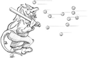
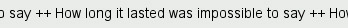

Events are generated by the window system or by Qt itself in response to various occurrences. When the user presses or releases a key or mouse button, a key or mouse event is generated; when a window is shown for the first time, a paint event is generated to tell the newly visible window that it needs to draw itself. Most events are generated in response to user actions, but some, such as timer events, are generated independently by the system.
When we program with Qt, we seldom need to think about events, because Qt widgets emit signals when something significant occurs. Events become useful when we write our own custom widgets or when we want to modify the behavior of existing Qt widgets.
Events should not be confused with signals. As a rule, signals are useful when using a widget, whereas events are useful when implementing a widget. For example, when we are using QPushButton, we are more interested in its clicked() signal than in the low-level mouse or key events that caused the signal to be emitted. But if we are implementing a class such as QPushButton, we need to write code to handle mouse and key events and emit the clicked() signal when necessary.
In Qt, an event is an instance of a QEvent subclass. Qt handles more than a hundred types of events, each identified by an enum value. For example, QEvent::type() returns QEvent::MouseButtonPress for mouse press events.
Many event types require more information than can be stored in a plain QEvent object; for example, mouse press events need to store which mouse button triggered the event as well as where the mouse pointer was positioned when the event occurred. This additional information is stored in dedicated QEvent subclasses, such as QMouseEvent.
Events are notified to objects through their event() function, inherited from QObject. The event() implementation in QWidget forwards the most common types of events to specific event handlers, such as mousePressEvent(), keyPressEvent(), and paintEvent().
We have already seen many event handlers when implementing MainWindow, IconEditor, and Plotter in earlier chapters. Many other types of events are listed in the QEvent reference documentation, and it is also possible to create custom event types and to dispatch events ourselves. Here, we will review two common event types that deserve more explanation: key events and timer events.
Key events are handled by reimplementing keyPressEvent() and keyReleaseEvent(). The Plotter widget reimplements keyPressEvent(). Normally, we only need to reimplement keyPressEvent() since the only keys for which release is important are the modifier keys Ctrl, Shift, and Alt, and these can be checked for in a keyPressEvent() using QKeyEvent::modifiers(). For example, if we were implementing a CodeEditor widget, its stripped-down keyPressEvent() that distinguishes between Home and Ctrl+Home would look like this:
void CodeEditor::keyPressEvent(QKeyEvent *event)
{
switch (event->key()) {
case Qt::Key_Home:
if (event->modifiers() & Qt::ControlModifier) {
goToBeginningOfDocument();
} else {
goToBeginningOfLine();
}
break;
case Qt::Key_End:
...
default:
QWidget::keyPressEvent(event);
}
}The Tab and Backtab (Shift+Tab) keys are special cases. QWidget::event() handles them before it calls keyPressEvent(), with the semantic of passing the focus to the next or previous widget in the focus chain. This behavior is usually what we want, but in a CodeEditor widget, we might prefer to make Tab indent a line. The event() reimplementation would then look like this:
bool CodeEditor::event(QEvent *event)
{
if (event->type() == QEvent::KeyPress) {
QKeyEvent *keyEvent = static_cast<QKeyEvent *>(event);
if (keyEvent->key() == Qt::Key_Tab) {
insertAtCurrentPosition('\t');
return true;
}
}
return QWidget::event(event);
}If the event is a key press, we cast the QEvent object to a QKeyEvent and check which key was pressed. If the key is Tab, we do some processing and return true to tell Qt that we have handled the event. If we returned false, Qt would propagate the event to the parent widget.
A higher-level approach for implementing key bindings is to use a QAction. For example, if goToBeginningOfLine() and goToBeginningOfDocument() are public slots in the CodeEditor widget, and the CodeEditor is used as the central widget in a MainWindow class, we could add the key bindings with the following code:
MainWindow::MainWindow()
{
editor = new CodeEditor;
setCentralWidget(editor);
goToBeginningOfLineAction =
new QAction(tr("Go to Beginning of Line"), this);
goToBeginningOfLineAction->setShortcut(tr("Home"));
connect(goToBeginningOfLineAction, SIGNAL(activated()),
editor, SLOT(goToBeginningOfLine()));
goToBeginningOfDocumentAction =
new QAction(tr("Go to Beginning of Document"), this);
goToBeginningOfDocumentAction->setShortcut(tr("Ctrl+Home"));
connect(goToBeginningOfDocumentAction, SIGNAL(activated()),
editor, SLOT(goToBeginningOfDocument()));
...
}This makes it easy to add the commands to a menu or a toolbar, as we saw in Chapter 3. If the commands don't appear in the user interface, the QAction objects could be replaced with a QShortcut object, the class used internally by QAction to support key bindings.
By default, key bindings set using QAction or QShortcut on a widget are enabled whenever the window that contains the widget is active. This can be changed using QAction::setShortcutContext() or QShortcut::setContext().
Another common type of event is the timer event. While most other event types occur as a result of a user action, timer events allow applications to perform processing at regular time intervals. Timer events can be used to implement blinking cursors and other animations, or simply to refresh the display.
To demonstrate timer events, we will implement the Ticker widget shown in Figure 7.1. This widget shows a text banner that scrolls left by one pixel every 30 milliseconds. If the widget is wider than the text, the text is repeated as often as necessary to fill the entire width of the widget.

#ifndef TICKER_H
#define TICKER_H
#include <QWidget>
class Ticker : public QWidget
{
Q_OBJECT
Q_PROPERTY(QString text READ text WRITE setText)
public:
Ticker(QWidget *parent = 0);
void setText(const QString &newText);
QString text() const { return myText; }
QSize sizeHint() const;
protected:
void paintEvent(QPaintEvent *event);
void timerEvent(QTimerEvent *event);
void showEvent(QShowEvent *event);
void hideEvent(QHideEvent *event);
private:
QString myText;
int offset;
int myTimerId;
};
#endif
We reimplement four event handlers in Ticker, three of which we have not seen before: timerEvent(), showEvent(), and hideEvent().
Now let's review the implementation:
#include <QtGui>
#include "ticker.h"
Ticker::Ticker(QWidget *parent)
: QWidget(parent)
{
offset = 0;
myTimerId = 0;
}The constructor initializes the offset variable to 0. The x-coordinate at which the text is drawn is derived from the offset value. Timer IDs are always non-zero, so we use 0 to indicate that no timer has been started.
void Ticker::setText(const QString &newText)
{
myText = newText;
update();
updateGeometry();
}The setText() function sets the text to display. It calls update() to request a repaint and updateGeometry() to notify any layout manager responsible for the Ticker widget about a size hint change.
QSize Ticker::sizeHint() const
{
return fontMetrics().size(0, text());
}The sizeHint() function returns the space needed by the text as the widget's ideal size. QWidget::fontMetrics() returns a QFontMetrics object that can be queried to obtain information relating to the widget's font. In this case, we ask for the size required by the given text. (The first argument to QFontMetrics::size() is a flag that isn't needed for simple strings, so we just pass 0.)
void Ticker::paintEvent(QPaintEvent * /* event */)
{
QPainter painter(this);
int textWidth = fontMetrics().width(text());
if (textWidth < 1)
return;
int x = -offset;
while (x < width()) {
painter.drawText(x, 0, textWidth, height(),
Qt::AlignLeft | Qt::AlignVCenter, text());
x += textWidth;
}
}The paintEvent() function draws the text using QPainter::drawText(). It uses fontMetrics() to ascertain how much horizontal space the text requires, and then draws the text as many times as necessary to fill the entire width of the widget, taking offset into account.
void Ticker::showEvent(QShowEvent * /* event */)
{
myTimerId = startTimer(30);
}The showEvent() function starts a timer. The call to QObject::startTimer() returns an ID number, which we can use later to identify the timer. QObject supports multiple independent timers, each with its own time interval. After the call to startTimer(), Qt will generate a timer event approximately every 30 milliseconds; the accuracy depends on the underlying operating system.
We could have called startTimer() in the Ticker constructor, but we save some resources by having Qt generate timer events only when the widget is actually visible.
void Ticker::timerEvent(QTimerEvent *event)
{
if (event->timerId() == myTimerId) {
++offset;
if (offset >= fontMetrics().width(text()))
offset = 0;
scroll(-1, 0);
} else {
QWidget::timerEvent(event);
}
}The system calls the timerEvent() function at intervals. It increments offset by 1 to simulate movement, wrapping at the width of the text. Then it scrolls the contents of the widget one pixel to the left using QWidget::scroll(). It would have been sufficient to call update() instead of scroll(), but scroll() is more efficient because it simply moves the existing pixels on-screen and generates a paint event only for the widget's newly revealed area (a 1-pixel-wide strip in this case).
If the timer event isn't for the timer we are interested in, we pass it on to the base class.
void Ticker::hideEvent(QHideEvent * /* event */)
{
killTimer(myTimerId);
myTimerId = 0;
}The hideEvent() function calls QObject::killTimer() to stop the timer.
Timer events are low-level, and if we need multiple timers, it can become cumbersome to keep track of all the timer IDs. In such situations, it is usually easier to create a QTimer object for each timer. QTimer emits the timeout() signal at each time interval. QTimer also provides a convenient interface for single-shot timers (timers that time out just once), as we saw in Chapter 6 (p. 158).